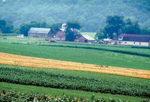

Doing Well By Doing Good
This thriving farmer-owned brand is revolutionizing the food business.
By Bryan Welch
February/March 2006
Organic Valley is North America’s second-largest producer of organic dairy products. The sales of this $259-million cooperative jumped 25 percent last year, surpassing the growth rate of both the conventional and organic food industries. The cooperative’s milk, butter, cottage cheese and soy milk are on the shelves of more than 10,000 stores from coast to coast. But its chief executive officer, George Siemon, doesn’t talk like a corporate chieftain: “We wouldn’t mind if the growth slowed down,” he says. “The most important thing to us is to keep our mission. Organic Valley’s not looking to conquer the world. We do things our own way, because we care about things other than business success.”
Despite this unorthodox approach, Organic Valley has helped revolutionize the food business over the past 18 years, and has changed the way Americans eat - for the better. Organic Valley is owned by a cooperative of 723 family farmers from 22 states.
Today, the cooperative’s size and reach have expanded far beyond its Midwest origins, but its roots are sunk deep in the soil of the Kickapoo Valley in southwest Wisconsin, and the tiny town of LaFarge (population 775). Organic Valley opened a new $6-million headquarters there in July 2004. Even the office buildings reflect Organic Valley’s mission - they all employ state-of-the-art renewable and energy-efficient technologies, and the building materials were either recycled or sourced from local businesses. The grounds surrounding the headquarters include nature trails for visitors and employees.
A RELUCTANT EXECUTIVE
Siemon has been involved with Organic Valley from the beginning. He came to the cooperative as a farmer, and - with his farming partner, Kevin “Sparrowhawk” Lamb - he still raises chickens, cattle, grain and vegetables on 90 acres. But as time passed, he found his innate talent for business became increasingly valuable to the cooperative. So he, somewhat reluctantly, became a full-time executive.
“For the first five years, I was always on the verge of backing out. There was a time when I was very unhappy here,” Siemon says, looking out the big windows of his corner office in the cooperative’s new hilltop command center. “I wanted to be outside on the land. It was a hard adjustment, being a boss. But you have to wrestle with fate and destiny. The good news about business is that it’s much more intuitive than people realize. I love that relationships are so critical to this business. We’re a partnership-based business, and that agrees with me.”
Siemon says that at Organic Valley, “There’s quite a bit of doing what you think is right. Farmers apply common sense and fairness to business - no side deals; what’s fair is fair.”
THE ORGANIC VALLEY PHILOSOPHY
Siemon attributes Organic Valley’s success to the organization’s deep commitment to its mission: marketing organic products cooperatively at fair prices and producing them in ways that are environmentally and economically sustainable. He compares the cooperative’s value system to the U.S. Constitution. In Siemon’s mind, Organic Valley’s system provides the framework for every management decision.
According to Siemon’s organic food philosophy (see The Ideal Organic Food System), people should grow much of their own food near their homes. The next best thing to homegrown food is food grown by trusted local farmers. Then come the organic foods distributed by conscientious organizations such as Organic Valley. The key element in this philosophy is consumers’ intimate knowledge of where their food comes from and the effects of its production.
Most food in the world today - even organic food - is grown far from those who consume it and is distributed by companies that only want profit. But Organic Valley’s commitment to its farmers and to the health of their communities puts the cooperative’s products a little closer to the ideal, according to Siemon. Organic Valley provides an alternative to multinational food giants such as Danone (owner of Stonyfield Farms) and Dean Foods (owner of Horizon Organics).
For inspiration, Organic Valley managers look to the Mondragon cooperatives of northern Spain, which were organized in the 1950s to provide opportunities to the impoverished residents of the Basque region. The Mondragon organization has grown to 160 employee-owned cooperatives, with 23,000 member-owners. The Mondragon cooperatives are twice as profitable as the average corporation in Spain, and their employee productivity surpasses any other Spanish business.
The essential difference between a cooperative and a traditional company is the distribution of wealth. All the members of the cooperative share in the organization’s success - not just a few shareholders.
In agriculture, the current way of doing business has been particularly hard on the producer. Even when the consumer is willing to pay a premium price, big distributors pay farmers as little as possible and pocket the difference. (For more on this trend, see the graphic above.) At Organic Valley, however, the farmers own the label, and they benefit directly when consumers appreciate the high quality of their organic products - and the conscientious way they farm.
Organic Valley’s philosophical foundation was built from a combination of political idealism, economic necessity and Midwestern common sense. In 1988, a small group of Wisconsin produce farmers founded the Coulee Region Organic Produce Pool (CROPP) and began discussing strategies for marketing their products. Seven of those farmers were specifically interested in the organic dairy segment; they recognized its potential for success given that a network of milk-handlers was already in place in Wisconsin. These seven farmers then drew the attention of one of the region’s milk-handlers, the National Farmers Organization (NFO). Because consumer demand for organics was expanding and the NFO was committed to paying farmers fair prices, the founding farmers of Organic Valley were able to earn premium prices for their products.
Today, CROPP stands for Cooperative Regions of Organic Producer Pools, and most of its products are marketed under the Organic Valley label. Organic meat from CROPP farmers is marketed under the Organic Prairie label. CROPP also sells products directly to other companies, such as milk to Stonyfield Farm for its yogurt.
FARMERS AS HEROES
Two complementary trends have supported Organic Valley’s growth - consumer demand for healthier, sustainably produced foods and farmers’ desire for markets where better products are rewarded with better prices.
Those two factors continue to drive Organic Valley’s significant growth. As organic dairy products have become more popular over the last few years, the cooperative has added about 25 to 50 new dairy farmers each year. Organic Valley also has expanded to sell eggs, meat, orange juice and soy products. But the more important criterion for growth has been the desire of committed farmers to join forces. “Every expansion we’ve done has been driven by farmers,” Siemon says.
The cooperative proudly showcases the contributions of its member farmers. Organic Valley’s advertisements, brochures and Web site (http://www.organicvalley.coop)
are galleries of farmer profiles. Examples include Rosalie Williams of Bakersfield, Vt., who revived her family’s abandoned dairy farm; Harry Lewis, whose Texas dairy farm was built using money from a federal grant to provide food for American soldiers; and 21-year-old Matt Fendry, who led his parents out of their urban lifestyles and onto a hilly farm in southeastern Minnesota stocked with Jersey milk cows. As Siemon likes to say, “Farmers are our heroes.”
Organic Valley’s insistence on higher prices for its farmers led to the removal of the cooperative’s products from Wal-Mart in 2004. Many praised Organic Valley for taking a stand against the controversial retailer, but Siemon explains it was purely business, and it was not Organic Valley’s intent to make a political statement.
“We’re a business,” he says. “We’re not a political organization. We have to do what’s best for the business. Is it our mission to tell consumers where to shop? We don’t think so. We were in the worst under-supply situation we had seen, so we had plenty of markets and we didn’t need to sell at the Wal-Mart price. Somehow, that’s made us famous.”
Wayne Peters of Chaseburg, Wis., is a founding member-farmer of Organic Valley and, Siemon says, a driving force behind the cooperative’s success. When the young executives of the organization were intimidated by the scale of what they were attempting - taking on marketing giants such as Danone and Dean Foods - Peters pressed them forward.
“If you don’t ever play out of your league,” Peters says, “you don’t ever get out of your league.” Organic Valley is, without a doubt, playing in the big leagues now.
AN ONGOING APPRENTICESHIP
Siemon was not born on the farm. His family ran an office-supply business in Florida. “The conversation around the table was about business,” he says. “That probably helps, in some way, with what I do now.”
To follow his dream of becoming a forest ranger, Siemon left Florida to study at Colorado State University. But he didn’t particularly like what he learned about the job. “I was determined to work outdoors, but I didn’t like the idea of counting picnic tables for a living.”
When he and some friends rented a rural house, Siemon started gardening. Then he took a job on a nearby farm. Eventually, he worked at several farms in Colorado and Iowa and “fell in love with farming.” After his wife finished her graduate studies in nutrition, they moved to their own farm in western Wisconsin, where they raised three children.
In effect, Siemon says he has served an apprenticeship that continues to the present day. He considers the farmers of the Organic Valley cooperative to be the teachers from whom he learns the art of farming and from whom he receives the instruction he needs to set the direction of Organic Valley.
Siemon criticizes society for leaving farmers out of the process that decides agricultural policy. In his opinion, consulting with farmers will make the organic movement stronger. “Farmers are very smart people,” he says. “They just need to be brought into the discussion. They haven’t been included often enough.”
- To learn more about how your farm can join the Organic Valley cooperative, call (888) 809-9297 or visithttp://www.farmers.coop. Bryan Welch and his family raise grass-fed cattle, sheep and goats on their small farm near Lawrence, Kan. In his spare time, he runs Ogden Publications, which owns Mother Earth News, Natural Home & Garden and several related magazines and businesses.
ORGANIC VALLEY’S HEROES IN THE FIELDS
By Umut Newbury
Tom Frantzen, New Hampton, Iowa
Tom Frantzen’s main motivation to go organic was quality of life - for both the humans and animals involved.
He already had started rotating crops and reducing pesticide use on his 335-acre cattle and hog farm. “It wasn’t a big jump for me at all,” Frantzen says. “It was a business plan that supported the quality of life we were looking to achieve on the farm.”
By the late 1990s, Frantzen had moved to an entirely organic hog operation. He was instrumental in helping to launch Organic Valley’s “Organic Prairie” brand (http://www.organicprairie.com), and he remains a key supplier of pork to the cooperative.
“If you take the life of an average confinement hog, he’s seen little else but stainless steel and concrete walls,” Frantzen says. “My pigs, they’re born in the summer, outside. Later, they are in a hoop building with fresh air, sunshine and fresh bedding every two or three days.”
Travis and Amy Forgues, Alburg Springs, Vermont
Travis Forgues grew up on a family dairy farm near Vermont’s Lake Champlain, but he did not have any plans to get involved in the business.
Travis and his high school sweetheart, Amy, married in 1995 and bought the house next door to his parents, so they could start a family. “We didn’t come back here to farm, we came back for family,” he says. Going into farming was still not financially viable for the couple - they worked at different jobs in Alburg Springs for two years, before going to a meeting about organics. “I realized then that the farm was already organic because Dad wasn’t fond of pesticides or antibiotics. All we had to do was buy organic grain,” Travis says.
So at age 23, barely out of college, Travis and Amy became organic dairy farmers with 200 acres near the Canadian border.
In 1999, they joined Organic Valley - becoming one of the first Vermont farms in the co-op. Travis and his father, Henry, continue to milk 80 cows, while Amy and the children take care of the young calves. “I didn’t sign up for this to make a truckload of money,” Travis says. But they are making enough now that staying on the farm will be an option for their children, Emma, 8, Gabriel, 6, and Molly, 2. “We are so happy we made the move,” Amy says. “Organics have changed this farm from what was a struggle for two families to a comfortable living.”
Travis and Amy are hardly the youngest farmers in the cooperative. “We have more and more young people coming in,” Travis says. “The next big thing for Organic Valley will be ‘Generation Organic,’ an educational program for the next group of organic farmers.”
Harry and Billye Lewis, Sulphur Springs, Texas
For Harry Lewis, owner of a 287-acre dairy in northeast Texas with his wife, Billye, and son, Wynton, organic farming is not a new concept.
“What people don’t understand is that we have been using synthetics for only the last 50 years,” he says. “For thousands of years before that, we had done it organically.” Harry says that’s how his father farmed when he first received the land through a federal grant to grow food for U.S. soldiers involved in World War II.
“My father had Grade B milk, he rotated crops and he was self-sufficient - he raised veggies and had a creek with lots of fish in it,” Harry says.
In 2002, Harry went to an Organic Valley recruitment meeting with a tape recorder, which he accidentally left behind. When he got home, Organic Valley’s George Siemon and Wayne Shaker were at his doorstep with the recorder. While they were waiting, they had surveyed Harry’s land, which for decades had been farmed without herbicides or pesticides. The two men told Harry it would be easy to certify the farm as organic. “Something in me said, ‘This is it, this is the right thing to do,’” he says. By 2005, Harry’s herd and land were certified organic. His cows’ milk is now sold under the “Texas Pastures” label in all major cities in Texas.
“When I give out milk samples, I treat them like rare wine and tell people to check out the bouquet,” Lewis says. “The flavor of the milk is the flavor of the diverse grasses on the pasture.”
|
Organic Valley/Carrie Branovan Travis Forgues with two of his children, Gabe and Molly, on the family’s organic dairy farm in Alburg Springs, Vt. |
Organic Valley/Carrie Branovan George Siemon, Organic Valley chief executive officer. |
 Organic Valley/Carrie Branovan George Siemon’s own organic farm. |
|
Organic Valley/Phil Weston Visitors to Organic Valley’s corporate headquarters in LaFarge, Wis., enter through this big red barn. |
 Courtesy Organic Valley Sales of Organic Valley products rose 25 percent in 2005. Its products include organic milk, butter, cheese, eggs, soy milk, orange juice and meat. |
 Organic Valley/Carrie Branovan Tom Frantzen of New Hampton, Iowa is a member of the Organic Valley cooperative. |
 Organic Valley/Carrie Branovan Travis and Amy Forgues of Alburg Springs, Vermont are members of the Organic Valley farmer's cooperative. |
Organic Valley/Carrie Branovan Harry and Billye Lewis of Sulphur Springs, Texas |
Organic Valley/Carrie Branovan Erin Beidler, daughter of Organic Valley farmers Brent and Regina Beidler, enjoys the open air of the family’s organic dairy farm in Randolph Center, Vt. |